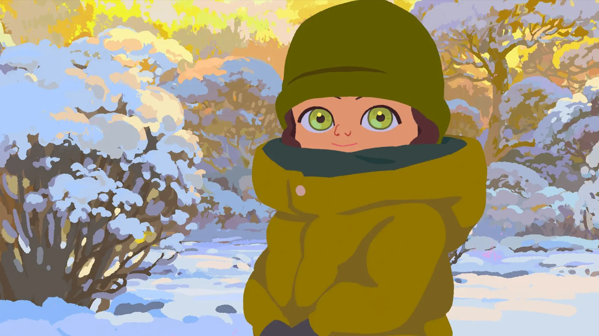
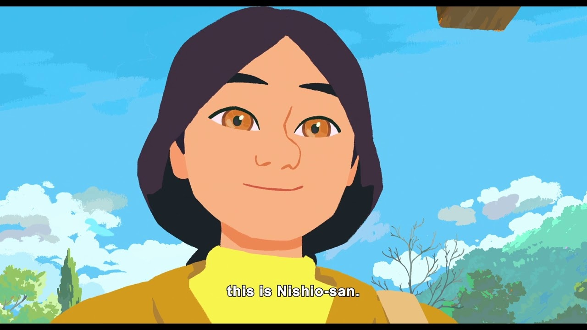
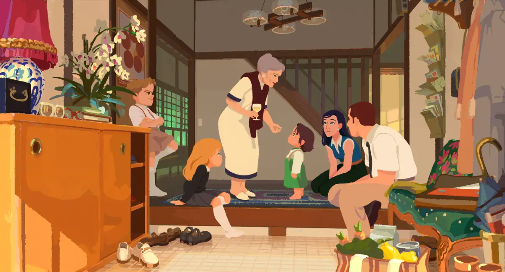

AMELIE Y LOS SECRETOS DE LA LLUVIA
Introducción
Amelie y los secretos de la lluvia es una película animada franco-belga dirigida por Maïlys Vallade y Liane-Cho Han, quienes tardaron siete años en realizarla. Está basada en la novela autobiográfica Metafísica de los tubos de la escritora belga Amélie Nothomb, que narra sus propios recuerdos de infancia en Japón a finales de los años 60.
La película sigue a Amélie, una niña belga de dos y tres años, hija de un diplomático, que vive con su familia en una hermosa zona suburbana de Japón. Con una animación en 2D de colores pastel y una sensibilidad muy cercana al cine de Studio Ghibli, la cinta combina humor filosófico, ternura y una mirada íntima sobre cómo una niña pequeña descubre la alegría, la amistad y las primeras notas de tristeza.
La película se estrenó en el Festival de Cine de Cannes 2025 y fue nominada al Premio de la Academia (Oscar) y al BAFTA como Mejor Película Animada, con un 98% de aprobación en Rotten Tomatoes.

Amélie interpretada por: Loïse Charpentier
Loïse Charpentier presta su voz a la protagonista en la versión original francesa. Amélie es una niña belga con una vida interior sorprendentemente filosófica para su edad, lo que la convierte en uno de los personajes animados más memorables de los últimos años.
Su papel: protagonista absoluta de la historia. Durante sus dos primeros años de vida, Amélie existe en un estado casi pasivo, percibiéndose a sí misma como un simple "tubo" que existe. Es el amor de su abuela y el primer sabor del chocolate blanco lo que la despierta y la conecta con el mundo.
Curiosa, imaginativa y sensible, Amélie descubre la naturaleza, la comida, la amistad y los pequeños rituales cotidianos. Pero también aprende que nada es permanente, y su tercer cumpleaños marcará un antes y un después en su forma de ver la vida.

Nishio-san interpretada por: Victoria Grosbois
La compañera de vida de Amélie en Japón. Se conocen desde que la niña era bebé y la relación que construyen juntas es el corazón emocional de la película.
Nishio-san es el ama de llaves y niñera de la familia. Es la persona que más tiempo comparte con Amélie en su día a día, convirtiéndose en su primera gran amiga y guía en el descubrimiento del mundo. Su presencia cálida y paciente es fundamental en el despertar emocional de la protagonista.
A través de Nishio-san, Amélie aprende a observar los pequeños rituales de la vida cotidiana con atención y gratitud. Ella representa el encuentro afectivo entre dos culturas muy diferentes.

Historia de la película
La película arranca con una idea audaz: durante sus dos primeros años de vida, Amélie existe en un estado casi vegetativo, percibiéndose a sí misma como un "tubo" pasivo que simplemente existe. Es el amor de su abuela y el primer sabor del chocolate blanco lo que la despierta y la conecta con el mundo.
A partir de ese momento, Amélie comienza a descubrir la naturaleza japonesa, los rituales cotidianos, la comida y la amistad con Nishio-san. La historia transcurre en una hermosa zona suburbana del Japón de los años 60, donde el contacto directo con la naturaleza da forma a sus primeras experiencias sensoriales y emocionales.
Sin embargo, durante su tercer cumpleaños, un suceso inesperado irrumpe en su rutina y transforma su percepción de todo lo que la rodea. Por primera vez, la alegría y la tristeza se presentan con la misma fuerza, marcando el inicio de un despertar emocional que definirá su forma de ver el mundo para siempre.

Temas de la película
Identidad y conciencia: la película explora cómo una persona se convierte en individuo. Amélie pasa de percibirse como un "tubo" pasivo a descubrir que tiene deseos, miedos y una perspectiva única del mundo.
Amistad: la relación con Nishio-san muestra cómo los lazos afectivos más tempranos dan forma a nuestra manera de ver el mundo. Una amistad cotidiana, cálida y llena de pequeños momentos que pesan mucho.
Pérdida y temporalidad: uno de los grandes descubrimientos de Amélie es que nada es permanente. La película trata este tema con delicadeza, sin dramatismo fácil, ayudando a los más pequeños a encontrar palabras para emociones difíciles.
Encuentro de culturas: el cruce entre la familia belga y la sociedad japonesa de los años 60 es un telón de fondo constante. La película muestra con sensibilidad las tensiones y el resentimiento del Japón de posguerra hacia los europeos, pero también los momentos de encuentro genuino.

Tráiler accesible
Aquí encontrarás el video accesible del tráiler de la película. Puedes activar los subtítulos usando el botón CC en el reproductor de YouTube.
Soundtrack
La música original de Amelie y los secretos de la lluvia fue compuesta por Mari Fukuhara, quien creó una banda sonora delicada e íntima que acompaña cada descubrimiento de Amélie. Los instrumentos de cuerda y las melodías suaves refuerzan la sensación de contemplación y ternura que caracteriza a la película.
La partitura logra transmitir tanto la alegría del descubrimiento como la melancolía de la pérdida, acompañando cada emoción de Amélie sin subrayarla en exceso. Un trabajo musical que fue destacado por la crítica especializada junto al resto de los elementos artísticos de la película.